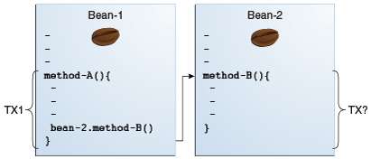

1. Transactions
This chapter describes types of transactions and how they are managed in different applications.
1.1. Overview of Transactions
A typical enterprise application accesses and stores information in one or more databases. Because this information is critical for business operations, it must be accurate, current, and reliable. Data integrity would be lost if multiple programs were allowed to update the same information simultaneously or if a system that failed while processing a business transaction were to leave the affected data only partially updated. By preventing both of these scenarios, software transactions ensure data integrity. Transactions control the concurrent access of data by multiple programs. In the event of a system failure, transactions make sure that after recovery, the data will be in a consistent state.
1.2. Transactions in Jakarta EE Applications
In a Jakarta EE application, a transaction is a series of actions that must all complete successfully, or else all the changes in each action are backed out. Transactions end in either a commit or a rollback.
Jakarta Transactions allows applications to access transactions in a manner that is independent of specific implementations. Jakarta Transactions specifies standard Java interfaces between a transaction manager and the parties involved in a distributed transaction system: the transactional application, the Jakarta EE server, and the manager that controls access to the shared resources affected by the transactions.
Jakarta Transactions defines the UserTransaction interface that applications use to
start, commit, or roll back transactions. Application components get a
UserTransaction object through a JNDI lookup by using the name
java:comp/UserTransaction or by requesting injection of a
UserTransaction object. An application server uses a number of
Jakarta Transactions defined interfaces to communicate with a transaction manager; a
transaction manager uses Jakarta Transactions defined interfaces to interact with a
resource manager.
The Jakarta Transactions 1.3 specification is available at
https://jakarta.ee/specifications/transactions/1.3/.
1.3. What Is a Transaction?
To emulate a business transaction, a program may need to perform several steps. A financial program, for example, might transfer funds from a checking account to a savings account by using the steps listed in the following pseudocode:
begin transaction
debit checking account
credit savings account
update history log
commit transactionEither all or none of the three steps must complete. Otherwise, data integrity is lost. Because the steps within a transaction are a unified whole, a transaction is often defined as an indivisible unit of work.
A transaction can end in two ways: with a commit or with a rollback.
When a transaction commits, the data modifications made by its
statements are saved. If a statement within a transaction fails, the
transaction rolls back, undoing the effects of all statements in the
transaction. In the pseudocode, for example, if a disk drive were to
crash during the credit step, the transaction would roll back and undo
the data modifications made by the debit statement. Although the
transaction fails, data integrity would be intact because the accounts
still balance.
In the preceding pseudocode, the begin and commit statements mark
the boundaries of the transaction. When designing an enterprise bean,
you determine how the boundaries are set by specifying either
container-managed or bean-managed transactions.
1.4. Container-Managed Transactions
In an enterprise bean with container-managed transaction demarcation, the enterprise bean container sets the boundaries of the transactions. You can use container-managed transactions with any type of enterprise bean: session or message-driven. Container-managed transactions simplify development because the enterprise bean code does not explicitly mark the transaction’s boundaries. The code does not include statements that begin and end the transaction. By default, if no transaction demarcation is specified, enterprise beans use container-managed transaction demarcation.
Typically, the container begins a transaction immediately before an enterprise bean method starts and commits the transaction just before the method exits. Each method can be associated with a single transaction. Nested or multiple transactions are not allowed within a method.
Container-managed transactions do not require all methods to be associated with transactions. When developing a bean, you can set the transaction attributes to specify which of the bean’s methods are associated with transactions.
Enterprise beans that use container-managed transaction demarcation must
not use any transaction-management methods that interfere with the
container’s transaction demarcation boundaries. Examples of such methods
are the commit, setAutoCommit, and rollback methods of
java.sql.Connection or the commit and rollback methods of
javax.jms.Session. If you require control over the transaction
demarcation, you must use application-managed transaction demarcation.
Enterprise beans that use container-managed transaction demarcation also
must not use the javax.transaction.UserTransaction interface.
1.4.1. Transaction Attributes
A transaction attribute controls the scope of a transaction.
Figure 54-1 illustrates why controlling the scope is
important. In the diagram, method-A begins a transaction and then
invokes method-B of Bean-2. When method-B executes, does it run
within the scope of the transaction started by method-A, or does it
execute with a new transaction? The answer depends on the transaction
attribute of method-B.

A transaction attribute can have one of the following values:
-
Required -
RequiresNew -
Mandatory -
NotSupported -
Supports -
Never
Required Attribute
If the client is running within a transaction and invokes the enterprise bean’s method, the method executes within the client’s transaction. If the client is not associated with a transaction, the container starts a new transaction before running the method.
The Required attribute is the implicit transaction attribute for all
enterprise bean methods running with container-managed transaction
demarcation. You typically do not set the Required attribute unless
you need to override another transaction attribute. Because transaction
attributes are declarative, you can easily change them later.
RequiresNew Attribute
If the client is running within a transaction and invokes the enterprise bean’s method, the container takes the following steps:
-
Suspends the client’s transaction
-
Starts a new transaction
-
Delegates the call to the method
-
Resumes the client’s transaction after the method completes
If the client is not associated with a transaction, the container starts a new transaction before running the method.
You should use the RequiresNew attribute when you want to ensure that
the method always runs within a new transaction.
Mandatory Attribute
If the client is running within a transaction and invokes the enterprise
bean’s method, the method executes within the client’s transaction. If
the client is not associated with a transaction, the container throws a
TransactionRequiredException.
Use the Mandatory attribute if the enterprise bean’s method must use
the transaction of the client.
NotSupported Attribute
If the client is running within a transaction and invokes the enterprise bean’s method, the container suspends the client’s transaction before invoking the method. After the method has completed, the container resumes the client’s transaction.
If the client is not associated with a transaction, the container does not start a new transaction before running the method.
Use the NotSupported attribute for methods that don’t need
transactions. Because transactions involve overhead, this attribute may
improve performance.
Supports Attribute
If the client is running within a transaction and invokes the enterprise bean’s method, the method executes within the client’s transaction. If the client is not associated with a transaction, the container does not start a new transaction before running the method.
Because the transactional behavior of the method may vary, you should
use the Supports attribute with caution.
Never Attribute
If the client is running within a transaction and invokes the enterprise
bean’s method, the container throws a RemoteException. If the client
is not associated with a transaction, the container does not start a new
transaction before running the method.
Summary of Transaction Attributes
Table 54-1 summarizes the effects of the transaction
attributes. Both the T1 and the T2 transactions are controlled by
the container. A T1 transaction is associated with the client that
calls a method in the enterprise bean. In most cases, the client is
another enterprise bean. A T2 transaction is started by the container
just before the method executes.
In the last column of Table 54-1, the word "None" means that the business method does not execute within a transaction controlled by the container. However, the database calls in such a business method might be controlled by the transaction manager of the database management system.
Table 54-1 Transaction Attributes and Scope
Transaction Attribute |
Client’s Transaction |
Business Method’s Transaction |
|
None |
T2 |
|
T1 |
T1 |
|
None |
T2 |
|
T1 |
T2 |
|
None |
Error |
|
T1 |
T1 |
|
None |
None |
|
T1 |
None |
|
None |
None |
|
T1 |
T1 |
|
None |
None |
|
T1 |
Error |
Setting Transaction Attributes
Transaction attributes are specified by decorating the enterprise bean
class or method with a javax.ejb.TransactionAttribute annotation and
setting it to one of the javax.ejb.TransactionAttributeType constants.
If you decorate the enterprise bean class with @TransactionAttribute,
the specified TransactionAttributeType is applied to all the business
methods in the class. Decorating a business method with
@TransactionAttribute applies the TransactionAttributeType only to
that method. If a @TransactionAttribute annotation decorates both the
class and the method, the method TransactionAttributeType overrides
the class TransactionAttributeType.
The TransactionAttributeType constants shown in Table
54-2 encapsulate the transaction attributes described earlier in this
section.
Table 54-2 TransactionAttributeType Constants
| Transaction Attribute | TransactionAttributeType Constant |
|---|---|
|
|
|
|
|
|
|
|
|
|
|
|
The following code snippet demonstrates how to use the
@TransactionAttribute annotation:
@TransactionAttribute(NOT_SUPPORTED)
@Stateful
public class TransactionBean implements Transaction {
...
@TransactionAttribute(REQUIRES_NEW)
public void firstMethod() {...}
@TransactionAttribute(REQUIRED)
public void secondMethod() {...}
public void thirdMethod() {...}
public void fourthMethod() {...}
}In this example, the TransactionBean class’s transaction attribute has
been set to NotSupported, firstMethod has been set to RequiresNew,
and secondMethod has been set to Required. Because a
@TransactionAttribute set on a method overrides the class
@TransactionAttribute, calls to firstMethod will create a new
transaction, and calls to secondMethod will either run in the current
transaction or start a new transaction. Calls to thirdMethod or
fourthMethod do not take place within a transaction.
1.4.2. Rolling Back a Container-Managed Transaction
There are two ways to roll back a container-managed transaction. First,
if a system exception is thrown, the container will automatically roll
back the transaction. Second, by invoking the setRollbackOnly method
of the EJBContext interface, the bean method instructs the container
to roll back the transaction. If the bean throws an application
exception, the rollback is not automatic but can be initiated by a call
to setRollbackOnly.
1.4.3. Synchronizing a Session Bean’s Instance Variables
The SessionSynchronization interface, which is optional, allows
stateful session bean instances to receive transaction synchronization
notifications. For example, you could synchronize the instance variables
of an enterprise bean with their corresponding values in the database.
The container invokes the SessionSynchronization methods
(afterBegin, beforeCompletion, and afterCompletion) at each of the
main stages of a transaction.
The afterBegin method informs the instance that a new transaction has
begun. The container invokes afterBegin immediately before it invokes
the business method.
The container invokes the beforeCompletion method after the business
method has finished but just before the transaction commits. The
beforeCompletion method is the last opportunity for the session bean
to roll back the transaction (by calling setRollbackOnly).
The afterCompletion method indicates that the transaction has
completed. This method has a single boolean parameter whose value is
true if the transaction was committed and false if it was rolled
back.
1.4.4. Methods Not Allowed in Container-Managed Transactions
You should not invoke any method that might interfere with the transaction boundaries set by the container. The following methods are prohibited:
-
The
commit,setAutoCommit, androllbackmethods ofjava.sql.Connection -
The
getUserTransactionmethod ofjavax.ejb.EJBContext -
Any method of
javax.transaction.UserTransaction
You can, however, use these methods to set boundaries in application-managed transactions.
1.5. Bean-Managed Transactions
In bean-managed transaction demarcation, the code in the session or message-driven bean explicitly marks the boundaries of the transaction. Although beans with container-managed transactions require less coding, they have one limitation: When a method is executing, it can be associated with either a single transaction or no transaction at all. If this limitation will make coding your bean difficult, you should consider using bean-managed transactions.
The following pseudocode illustrates the kind of fine-grained control you can obtain with application-managed transactions. By checking various conditions, the pseudocode decides whether to start or stop certain transactions within the business method:
begin transaction
...
update table-a
...
if (condition-x)
commit transaction
else if (condition-y)
update table-b
commit transaction
else
rollback transaction
begin transaction
update table-c
commit transactionWhen coding an application-managed transaction for session or message-driven beans, you must decide whether to use Java Database Connectivity or Jakarta transactions. The sections that follow discuss both types of transactions.
1.5.1. Jakarta Transactions
Jakarta Transactions allows you to demarcate transactions in a manner that is independent of the transaction manager implementation. GlassFish Server implements the transaction manager with the Java Transaction Service (JTS). However, your code doesn’t call the JTS methods directly but instead invokes the Jakarta Transactions methods, which then call the lower-level JTS routines.
A Jakarta transaction is controlled by the Jakarta EE transaction manager. You may want to use a Jakarta transaction because it can span updates to multiple databases from different vendors. A particular DBMS’s transaction manager may not work with heterogeneous databases. However, the Jakarta EE transaction manager does have one limitation: It does not support nested transactions. In other words, it cannot start a transaction for an instance until the preceding transaction has ended.
To demarcate a Jakarta transaction, you invoke the begin, commit, and
rollback methods of the javax.transaction.UserTransaction interface.
1.5.2. Returning without Committing
In a stateless session bean with bean-managed transactions, a business method must commit or roll back a transaction before returning. However, a stateful session bean does not have this restriction.
In a stateful session bean with a Jakarta transaction, the association between the bean instance and the transaction is retained across multiple client calls. Even if each business method called by the client opens and closes the database connection, the association is retained until the instance completes the transaction.
In a stateful session bean with a JDBC transaction, the JDBC connection retains the association between the bean instance and the transaction across multiple calls. If the connection is closed, the association is not retained.
1.5.3. Methods Not Allowed in Bean-Managed Transactions
Do not invoke the getRollbackOnly and setRollbackOnly methods of the
EJBContext interface in bean-managed transactions. These methods
should be used only in container-managed transactions. For bean-managed
transactions, invoke the getStatus and rollback methods of the
UserTransaction interface.
1.6. Transaction Timeouts
For container-managed transactions, you can use the Administration Console to configure the transaction timeout interval. See Starting the Administration Console.
For enterprise beans with bean-managed Jakarta transactions, you invoke the
setTransactionTimeout method of the UserTransaction interface.
1.6.1. To Set a Transaction Timeout
-
In the Administration Console, expand the Configurations node, then expand the server-config node and select Transaction Service.
-
On the Transaction Service page, set the value of the Transaction Timeout field to the value of your choice (for example, 5).
With this setting, if the transaction has not completed within 5 seconds, the enterprise bean container rolls it back.
The default value is 0, meaning that the transaction will not time out.
-
Click Save.
1.7. Updating Multiple Databases
The Jakarta EE transaction manager controls all enterprise bean transactions except for bean-managed JDBC transactions. The Jakarta EE transaction manager allows an enterprise bean to update multiple databases within a transaction. Figure 54-2 and Figure 54-3 show two scenarios for updating multiple databases in a single transaction.
In Figure 54-2, the client invokes a business method in
Bean-A. The business method begins a transaction, updates Database X,
updates Database Y, and invokes a business method in Bean-B. The
second business method updates Database Z and returns control to the
business method in Bean-A, which commits the transaction. All three
database updates occur in the same transaction.
In Figure 54-3, the client calls a business method in
Bean-A, which begins a transaction and updates Database X. Then
Bean-A invokes a method in Bean-B, which resides in a remote Jakarta EE
server. The method in Bean-B updates Database Y. The transaction
managers of the Jakarta EE servers ensure that both databases are updated
in the same transaction.


1.8. Transactions in Web Components
You can demarcate a transaction in a web component by using either the
java.sql.Connection or the javax.transaction.UserTransaction
interface. These are the same interfaces that a session bean with
bean-managed transactions can use. Transactions demarcated with the
UserTransaction interface are discussed in
Jakarta Transactions.
1.9. Further Information about Transactions
For more information about transactions, see the Jakarta Transactions
1.3 specification at https://jakarta.ee/specifications/transactions/1.3/.